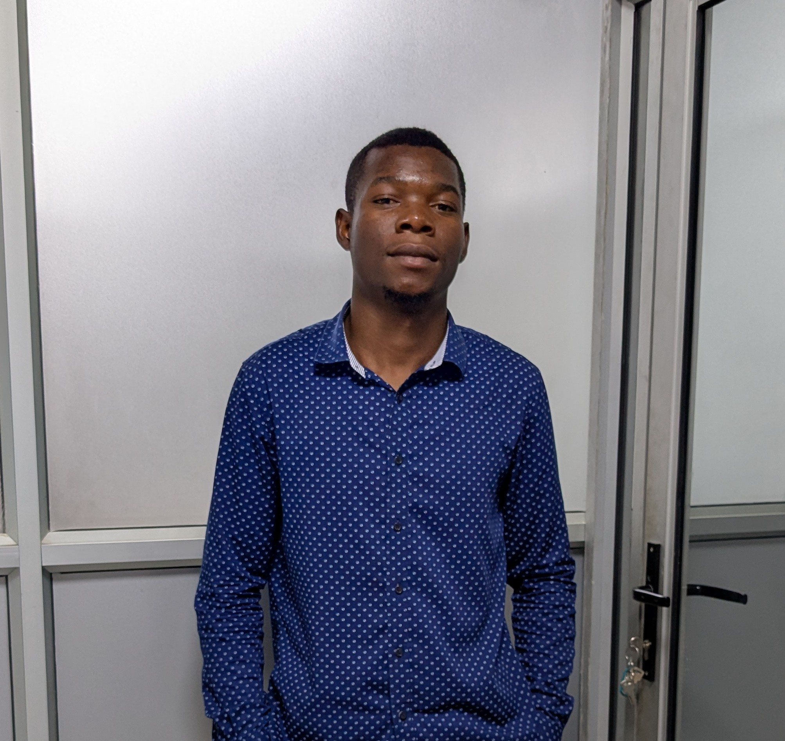

Esau Zulu - Head Barista
With over 10 years of experience, Alex crafts each cup with precision and passion. His signature espresso has won multiple local competitions.
Where passion meets perfection
Aurora Coffee House was born from a simple dream: to create a space where coffee lovers could gather, connect, and enjoy the finest brews. Our founder, Jacob Zulu, traveled the world learning from master roasters before bringing his expertise back home.
"Coffee is not just a drink. It's a moment of connection, a pause in the day, a shared experience." - Jacob Zulu

With over 10 years of experience, Alex crafts each cup with precision and passion. His signature espresso has won multiple local competitions.
Margaret's artisanal pastries are made fresh daily using organic ingredients and traditional techniques.